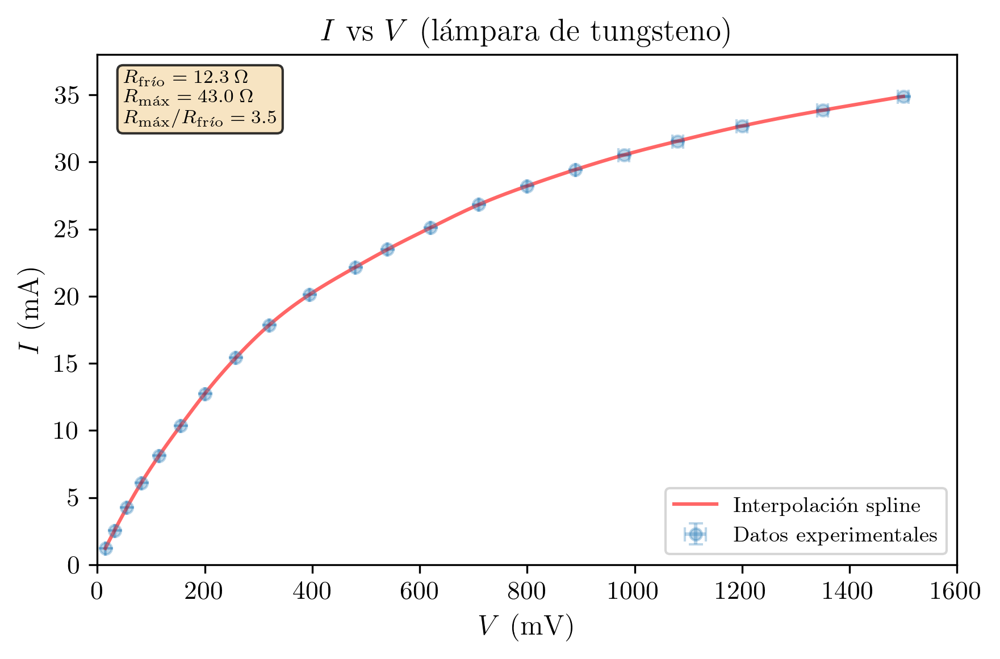
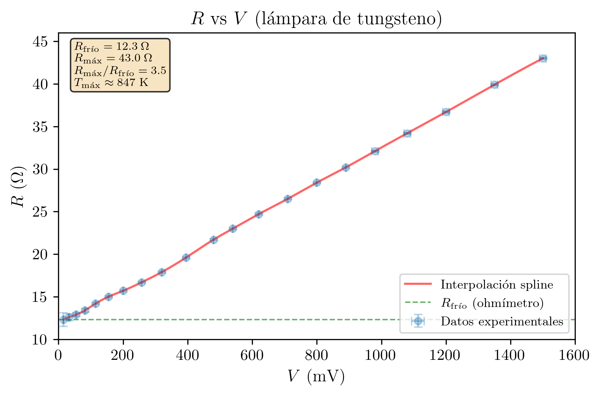

Práctica 5 — Técnicas Experimentales I
2026-03-07
Se estudian experimentalmente circuitos de corriente continua. Se comparan los montajes corto y largo para la medida de resistencias de 47 Ω, 680 Ω y 1 MΩ, confirmando que el montaje corto es óptimo para resistencias pequeñas y el largo para resistencias grandes, con una frontera en R ≈ 3162 Ω. Se verifica la ley de Kirchhoff de las tensiones para resistencias bajas y medias, y se muestra que para resistencias del orden de la resistencia interna del voltímetro (10 MΩ) la verificación falla por efecto de carga del instrumento. Finalmente, se obtiene la curva característica I-V de una lámpara de filamento de tungsteno, observando un comportamiento no óhmico: la resistencia aumenta de (12.3 ± 0.1) Ω en frío a (43.0 ± 0.1) Ω a 1.5 V, correspondiente a una temperatura estimada del filamento de ≈ 848 K.
| Asignatura | Técnicas Experimentales I (Cod. 61041080) |
| Práctica | Práctica 5: Corriente Continua II. Curva Característica de una Lámpara |
| Alumna | María López Fernández |
| DNI | 12345678A |
| Correo electrónico | mlopezfernandez42@ejemplo.uned.es |
| Teléfono | 612 345 678 |
| Centro Asociado | Madrid - Gregorio Marañón |
| Tutor | Dr. Fernando García Martínez |
| Fecha de realización | 27 de febrero de 2026 |
| Fecha de entrega | 7 de marzo de 2026 |
El objetivo de esta práctica es el estudio experimental de circuitos de corriente continua, con énfasis en tres aspectos fundamentales: la comparación de los montajes de medida corto y largo para la determinación de resistencias, la verificación de la ley de Kirchhoff de las tensiones, y la obtención de la curva característica intensidad-tensión de una lámpara de incandescencia.
En la primera parte de la práctica se analizan los errores sistemáticos inherentes a los dos montajes básicos de medida de resistencias (montaje corto y montaje largo), comparando los valores obtenidos con los proporcionados por un ohmímetro digital. Se estudia cómo la resistencia interna del amperímetro y la resistencia finita del voltímetro introducen errores sistemáticos distintos según el montaje y el valor de la resistencia medida. Este análisis permite establecer criterios para la selección del montaje más adecuado en función del orden de magnitud de la resistencia a medir.
En la segunda parte se verifica experimentalmente la ley de Kirchhoff de las tensiones (segunda ley de Kirchhoff) para un circuito serie con dos resistencias. Se pone de manifiesto que, cuando las resistencias son del orden de magnitud de la resistencia interna del voltímetro, la perturbación introducida por el instrumento de medida hace que la suma de las tensiones individuales difiera de la tensión total medida.
Finalmente, se obtiene la curva característica I - V de una lámpara de filamento de tungsteno. A diferencia de una resistencia óhmica, la lámpara presenta una relación no lineal entre intensidad y tensión: su resistencia aumenta con la temperatura del filamento. Este comportamiento se analiza representando tanto I frente a V como R frente a V.
La ley de Ohm establece que, para un conductor óhmico, la intensidad de corriente I que circula a través de el es proporcional a la diferencia de potencial V aplicada entre sus extremos:
V = R \cdot I
donde R es la resistencia del conductor (en ohmios, \Omega). La resistencia de un conductor óhmico es constante e independiente de la tensión o la corriente aplicada (a temperatura constante).
Para medir experimentalmente una resistencia, se necesita un voltímetro (que mide la diferencia de potencial) y un amperímetro (que mide la corriente). Sin embargo, estos instrumentos no son ideales: el amperímetro tiene una resistencia interna R_A > 0 y el voltímetro tiene una resistencia interna R_V < \infty. Según cómo se conecten ambos instrumentos respecto a la resistencia, se obtienen dos montajes con errores sistemáticos diferentes.
En el montaje corto, el amperímetro se conecta en serie con el conjunto formado por la resistencia R y el voltímetro (conectado en paralelo con R). En este montaje:
A
┌───[A]───┬───────┐
| | |
[Fuente] [R] [V]
| | |
└─────────┴───────┘
Montaje corto: el amperímetro (A) mide I_R + I_V.
El voltímetro (V) mide V_R directamente.La resistencia aparente medida es:
R_{\text{mc}} = \frac{V_{\text{medido}}}{I_{\text{medido}}} = \frac{V_R}{I_R + I_V} = \frac{V_R}{V_R/R + V_R/R_V} = \frac{R \cdot R_V}{R + R_V}
El error sistemático relativo es:
\frac{R_{\text{mc}} - R}{R} = \frac{R \cdot R_V/(R + R_V) - R}{R} = -\frac{R}{R + R_V} \approx -\frac{R}{R_V} \quad \text{(si } R \ll R_V\text{)}
Conclusión: El montaje corto introduce un error sistemático que es despreciable cuando R \ll R_V. Es decir, el montaje corto es adecuado para resistencias pequeñas comparadas con la resistencia del voltímetro.
En el montaje largo, el voltímetro se conecta en paralelo con el conjunto formado por la resistencia R y el amperímetro (conectado en serie con R). En este montaje:
A
┌────────┬───[A]───[R]───┐
| | |
[Fuente] [V] |
| | |
└────────┴───────────────┘
Montaje largo: el voltímetro (V) mide V_R + V_A.
El amperímetro (A) mide I_R directamente.La resistencia aparente medida es:
R_{\text{ml}} = \frac{V_{\text{medido}}}{I_{\text{medido}}} = \frac{I_R(R + R_A)}{I_R} = R + R_A
El error sistemático relativo es:
\frac{R_{\text{ml}} - R}{R} = \frac{R_A}{R}
Conclusión: El montaje largo introduce un error sistemático que es despreciable cuando R \gg R_A. Es decir, el montaje largo es adecuado para resistencias grandes comparadas con la resistencia del amperímetro.
Comparando los errores relativos de ambos montajes:
| Montaje | Error relativo sistemático | Mejor para |
|---|---|---|
| Corto | R/R_V | R pequeña (R \ll R_V) |
| Largo | R_A/R | R grande (R \gg R_A) |
La frontera entre ambos regímenes se sitúa en:
\frac{R}{R_V} = \frac{R_A}{R} \quad \Longrightarrow \quad R = \sqrt{R_A \cdot R_V}
Para los instrumentos de esta práctica (R_A \approx 1\ \Omega, R_V \approx 10\ \text{M}\Omega):
R_{\text{frontera}} = \sqrt{1 \times 10^7} \approx 3162\ \Omega
Para R < 3162\ \Omega conviene el montaje corto; para R > 3162\ \Omega conviene el montaje largo.
La segunda ley de Kirchhoff (ley de las mallas) establece que la suma algebraica de las diferencias de potencial a lo largo de cualquier lazo cerrado en un circuito es cero. Para un circuito serie con una fuente de tensión V_0 y dos resistencias R_A y R_B:
V_0 = V_A + V_B
donde V_A = I \cdot R_A y V_B = I \cdot R_B son las caídas de tensión en cada resistencia.
Efecto de carga del voltímetro: Cuando se mide una tensión con un voltímetro de resistencia finita R_V, el voltímetro actúa como una resistencia en paralelo con la resistencia que está midiendo, modificando el circuito. Si las resistencias del circuito son del orden de R_V, este efecto de carga puede ser significativo, haciendo que la suma de las tensiones individuales medidas difiera de la tensión total medida.
Un conductor óhmico cumple la ley de Ohm: la relación V - I es lineal y la resistencia R = V/I es constante. Ejemplos: resistencias de carbón, de película metálica, etc.
Un conductor no óhmico presenta una relación V - I no lineal: la resistencia R = V/I varía con la tensión o la corriente. Un ejemplo importante es la lámpara de filamento de tungsteno. En este caso, al aumentar la corriente, el filamento se calienta y su resistencia aumenta porque los metales tienen un coeficiente de temperatura positivo (la resistividad aumenta con la temperatura):
R(T) = R_0 [1 + \alpha (T - T_0)]
donde R_0 es la resistencia a la temperatura de referencia T_0 y \alpha es el coeficiente de temperatura del material. Para el tungsteno, \alpha \approx 4.5 \times 10^{-3} K^{-1} a temperatura ambiente. Dado que el filamento de una lámpara puede alcanzar temperaturas superiores a 2500 K, la resistencia en funcionamiento puede ser más de 10 veces la resistencia en frío.
El dispositivo experimental consta de una fuente de alimentación de corriente continua regulable (0 - 15 V), un multímetro digital utilizado como amperímetro (conectado en serie con el circuito), un segundo multímetro digital utilizado como voltímetro (conectado en paralelo con el elemento a medir), un tercer multímetro utilizado como ohmímetro, y diversos elementos pasivos: tres resistencias de valores nominales 47 \Omega, 680 \Omega y 1 M\Omega, una lámpara de filamento de tungsteno (12 V, 0.1 A), y una resistencia auxiliar de 100 \Omega en serie.
Para la verificación de Kirchhoff se utilizaron tres pares de resistencias en serie: un par de baja resistencia (147 \Omega y 178 \Omega), un par de media resistencia (99.5 k\Omega y 101.2 k\Omega), y un par de alta resistencia (0.98 M\Omega y 1.02 M\Omega).
Los circuitos se montaron sobre una placa de prototipos (protoboard), conectando los elementos con cables de laboratorio.
| Instrumento | Magnitud medida | Precisión | Observaciones |
|---|---|---|---|
| Multímetro digital (voltímetro) | Tensión V | \varepsilon_V = \pm 0.01 V | R_V \approx 10 M\Omega |
| Multímetro digital (amperímetro) | Corriente I | \varepsilon_I = \pm 0.01 mA (rango mA) | R_A \approx 1\ \Omega |
| \varepsilon_I = \pm 0.1\ \muA (rango \muA) | |||
| Multímetro digital (ohmímetro) | Resistencia R | \pm 1\% de lectura | Corriente de prueba pequeña |
| Fuente de alimentación CC | Tensión de salida | Regulable 0 - 15 V | Impedancia de salida baja |
Condiciones ambientales (A2): Las medidas se realizaron a temperatura ambiente de aproximadamente 20 \pm 2 °C y humedad relativa del 50 \pm 10\%. El laboratorio se encontraba en condiciones estables, sin corrientes de aire ni fuentes de calor próximas que pudieran afectar significativamente a las medidas eléctricas.
Estado de calibración y trazabilidad (B2/B3): Los multímetros digitales utilizados como voltímetro, amperímetro y ohmímetro se encuentran dentro de su período de calibración vigente, según las etiquetas de verificación del laboratorio. Las especificaciones de precisión indicadas por el fabricante se consideran trazables a patrones nacionales a través de la cadena de calibración del laboratorio. No se dispone de certificados de calibración individuales; las incertidumbres de tipo B se estiman a partir de las especificaciones del fabricante. La fuente de alimentación no requiere calibración específica, ya que la tensión de salida se mide con el voltímetro calibrado.
Figura 1. Montaje corto para la medida de resistencias.
A (amperímetro)
┌───[A]───┬───────┐
| | |
[E] [R] [V] (voltímetro)
| | |
└─────────┴───────┘
El amperímetro mide I_R + I_V.
El voltímetro mide V_R.Figura 2. Montaje largo para la medida de resistencias.
A (amperímetro)
┌────────┬───[A]───[R]───┐
| | |
[E] [V] |
| (voltímetro) |
└────────┴───────────────┘
El voltímetro mide V_R + V_A.
El amperímetro mide I_R.Figura 3. Circuito para la verificación de Kirchhoff (dos resistencias en serie).
R_A R_B
┌───┬──[R_A]──┬──[R_B]──┐
| | | |
[E] [V₃] [V₁] [V₂] (voltimetros para V₁, V₂ y V₃)
| | | |
└───┴─────────┴─────────┘
V₁: tensión en R_A. V₂: tensión en R_B. V₃: tensión total.
(Se miden de forma secuencial con un único voltímetro.)Figura 4. Circuito para la curva característica de la lámpara.
A R_aux (100 Ω)
┌────────┬───[A]───[R_aux]───[Lampara]───┐
| | |
[E] [V] |
| (voltímetro en bornes de la lampara) |
└────────┴───────────────────────────────┘
Se varía la tensión de la fuente y se leen V (en la lampara) e I (en el circuito).Antes de realizar medidas cuantitativas, se analiza cualitativamente el efecto de la resistencia interna de los instrumentos.
Instrumentos utilizados: El voltímetro tiene una resistencia interna R_V \approx 10\ \text{M}\Omega = 10^7\ \Omega. El amperímetro tiene una resistencia interna R_A \approx 1\ \Omega.
Montaje corto: El amperímetro mide I_{\text{total}} = I_R + I_V. La corriente I_V = V_R/R_V es despreciable siempre que R \ll R_V. Para R = 47\ \Omega: I_V/I_R = R/R_V = 47/10^7 = 4.7 \times 10^{-6} (despreciable). Para R = 1\ \text{M}\Omega: I_V/I_R = R/R_V = 10^6/10^7 = 0.1 (error del 10%, no despreciable).
Montaje largo: El voltímetro mide V_{\text{total}} = V_R + V_A = I_R(R + R_A). La caída V_A = I_R \cdot R_A es despreciable siempre que R \gg R_A. Para R = 47\ \Omega: V_A/V_R = R_A/R = 1/47 = 0.021 (error del 2.1%). Para R = 1\ \text{M}\Omega: V_A/V_R = R_A/R = 1/10^6 = 10^{-6} (despreciable).
Conclusión cualitativa: El montaje corto es preferible para resistencias pequeñas y el montaje largo para resistencias grandes.
En esta práctica se distinguen dos tipos de fuentes de error:
Errores sistemáticos:
Errores aleatorios:
En esta práctica, dado que se realiza una única medida (N = 1) por configuración, la incertidumbre de tipo A no puede evaluarse directamente (no hay repeticiones). La incertidumbre se estima exclusivamente a partir de las especificaciones instrumentales (tipo B).
Para los multímetros digitales, la resolución del instrumento define una semianchura a igual a la mitad del último dígito significativo. Se asume una distribución rectangular (uniforme) de probabilidad para el valor verdadero dentro del intervalo [\text{lectura} - a, \text{lectura} + a]. La incertidumbre estándar asociada a la resolución es:
u_{\text{resol}} = \frac{a}{\sqrt{3}}
En esta práctica, como simplificación pedagógica coherente con el manual del curso, se utiliza la semianchura a (o equivalentemente, la precisión \varepsilon_p) como estimación conservadora de la incertidumbre, en lugar de a/\sqrt{3}. Los grados de libertad asociados a cada evaluación de tipo B se consideran \nu_i \to \infty (se toman como 50 o más en la práctica), dado que las especificaciones del fabricante se consideran fiables.
Regla de error aplicada: Se ha realizado una única medida (N = 1) de tensión e intensidad para cada resistencia en cada montaje. Dado que N = 1, la incertidumbre coincide con la precisión del instrumento: \varepsilon = \varepsilon_p. No es posible evaluar una incertidumbre de tipo A (estadística), por lo que toda la incertidumbre es de tipo B.
Se midieron tres resistencias con el ohmímetro y con ambos montajes (corto y largo). La resistencia experimental se calcula como R_{\text{exp}} = V/I.
Propagación de errores para R = V/I:
\varepsilon_R = R \sqrt{\left(\frac{\varepsilon_V}{V}\right)^2 + \left(\frac{\varepsilon_I}{I}\right)^2}
Ohmímetro: R_{1,\text{ohm}} = 46.8\ \Omega con precisión \pm 1\%, es decir, \varepsilon_{R_{1,\text{ohm}}} = 0.01 \times 46.8 = 0.468 \approx 0.5\ \Omega.
\boxed{R_{1,\text{ohm}} = (46.8 \pm 0.5)\ \Omega}
Montaje corto: V = 4.52 V, I = 96.80 mA.
R_{1,\text{mc}} = \frac{V}{I} = \frac{4.52}{96.80 \times 10^{-3}} = 46.69\ \Omega
\varepsilon_{R_{1,\text{mc}}} = 46.69 \sqrt{\left(\frac{0.01}{4.52}\right)^2 + \left(\frac{0.01}{96.80}\right)^2} = 46.69 \sqrt{(2.21 \times 10^{-3})^2 + (1.03 \times 10^{-4})^2}
\varepsilon_{R_{1,\text{mc}}} = 46.69 \times 2.21 \times 10^{-3} = 0.103 \approx 0.1\ \Omega
\boxed{R_{1,\text{mc}} = (46.7 \pm 0.1)\ \Omega}
Error sistemático del montaje corto para R_1: El amperímetro mide I_R + I_V. La corriente por el voltímetro es I_V = 4.52 / 10^7 = 4.52 \times 10^{-7} A = 0.000452 mA. Comparada con I_R \approx 96.80 mA, el error sistemático relativo es I_V/I_R = 4.7 \times 10^{-6} (0.00047%), completamente despreciable.
Montaje largo: V = 4.62 V, I = 96.50 mA.
R_{1,\text{ml}} = \frac{V}{I} = \frac{4.62}{96.50 \times 10^{-3}} = 47.88\ \Omega
\varepsilon_{R_{1,\text{ml}}} = 47.88 \sqrt{\left(\frac{0.01}{4.62}\right)^2 + \left(\frac{0.01}{96.50}\right)^2} = 47.88 \times 2.17 \times 10^{-3} = 0.104 \approx 0.1\ \Omega
\boxed{R_{1,\text{ml}} = (47.9 \pm 0.1)\ \Omega}
Error sistemático del montaje largo para R_1: El voltímetro mide V_R + V_A, donde V_A = I \cdot R_A = 96.50 \times 10^{-3} \times 1 = 0.0965 V. Así, la tensión real en la resistencia es V_R = 4.62 - 0.097 = 4.52 V, y la resistencia verdadera sería R_{\text{true}} = 4.52 / 0.09650 = 46.8\ \Omega. El error sistemático relativo es R_A/R = 1/46.8 = 2.1\%.
Comparación para R_1: El montaje corto (R_{1,\text{mc}} = 46.7\ \Omega) proporciona un valor mucho más próximo al del ohmímetro (46.8\ \Omega) que el montaje largo (47.9\ \Omega). Esto confirma que para resistencias pequeñas, el montaje corto es preferible.
Aplicando el criterio de compatibilidad entre R_{1,\text{mc}} y R_{1,\text{ohm}}:
|R_{1,\text{mc}} - R_{1,\text{ohm}}| = |46.7 - 46.8| = 0.1\ \Omega \leq \varepsilon_{R_{1,\text{mc}}} + \varepsilon_{R_{1,\text{ohm}}} = 0.1 + 0.5 = 0.6\ \Omega \quad \checkmark
Los valores son compatibles.
Ohmímetro: R_{2,\text{ohm}} = 676\ \Omega con precisión \pm 1\%: \varepsilon_{R_{2,\text{ohm}}} = 0.01 \times 676 = 6.76 \approx 7\ \Omega.
\boxed{R_{2,\text{ohm}} = (676 \pm 7)\ \Omega}
Montaje corto: V = 8.45 V, I = 12.50 mA.
R_{2,\text{mc}} = \frac{8.45}{12.50 \times 10^{-3}} = 676.0\ \Omega
\varepsilon_{R_{2,\text{mc}}} = 676.0 \sqrt{\left(\frac{0.01}{8.45}\right)^2 + \left(\frac{0.01}{12.50}\right)^2} = 676.0 \sqrt{(1.18 \times 10^{-3})^2 + (8.00 \times 10^{-4})^2}
\varepsilon_{R_{2,\text{mc}}} = 676.0 \times 1.43 \times 10^{-3} = 0.97 \approx 1\ \Omega
\boxed{R_{2,\text{mc}} = (676 \pm 1)\ \Omega}
Error sistemático del montaje corto para R_2: I_V = 8.45/10^7 = 8.45 \times 10^{-7} A = 0.000845 mA. Error relativo: I_V/I_R = 0.000845/12.50 = 6.8 \times 10^{-5} (0.0068%), despreciable.
Montaje largo: V = 8.46 V, I = 12.48 mA.
R_{2,\text{ml}} = \frac{8.46}{12.48 \times 10^{-3}} = 677.9\ \Omega
\varepsilon_{R_{2,\text{ml}}} = 677.9 \sqrt{\left(\frac{0.01}{8.46}\right)^2 + \left(\frac{0.01}{12.48}\right)^2} = 677.9 \times 1.43 \times 10^{-3} = 0.97 \approx 1\ \Omega
\boxed{R_{2,\text{ml}} = (678 \pm 1)\ \Omega}
Error sistemático del montaje largo para R_2: V_A = 12.48 \times 10^{-3} \times 1 = 0.01248 V. Error relativo: R_A/R = 1/676 = 0.15\%. Este error ya no es completamente despreciable pero sigue siendo pequeño.
Comparación para R_2: Ambos montajes dan resultados próximos al del ohmímetro. El montaje corto (676.0\ \Omega) es ligeramente más preciso que el largo (677.9\ \Omega), pero la diferencia es pequeña. Esta resistencia está en la zona intermedia.
Ohmímetro: R_{3,\text{ohm}} = 985\ \text{k}\Omega con precisión \pm 1\%: \varepsilon_{R_{3,\text{ohm}}} = 0.01 \times 985 = 9.85 \approx 10\ \text{k}\Omega.
\boxed{R_{3,\text{ohm}} = (985 \pm 10)\ \text{k}\Omega}
Montaje corto: V = 9.85 V, I = 11.0\ \muA.
R_{3,\text{mc}} = \frac{9.85}{11.0 \times 10^{-6}} = 895\ \text{k}\Omega
\varepsilon_{R_{3,\text{mc}}} = 895 \times 10^3 \sqrt{\left(\frac{0.01}{9.85}\right)^2 + \left(\frac{0.1 \times 10^{-6}}{11.0 \times 10^{-6}}\right)^2}
= 895 \times 10^3 \sqrt{(1.02 \times 10^{-3})^2 + (9.09 \times 10^{-3})^2} = 895 \times 10^3 \times 9.15 \times 10^{-3} = 8.19\ \text{k}\Omega \approx 8\ \text{k}\Omega
\boxed{R_{3,\text{mc}} = (895 \pm 8)\ \text{k}\Omega}
Error sistemático del montaje corto para R_3: Este es el caso crítico. La corriente que pasa por el voltímetro es:
I_V = \frac{V}{R_V} = \frac{9.85}{10^7} = 0.985\ \mu\text{A}
La corriente real por la resistencia es I_R = I_{\text{medido}} - I_V = 11.0 - 0.985 = 10.015\ \muA, lo que daría:
R_{\text{true}} = \frac{V}{I_R} = \frac{9.85}{10.015 \times 10^{-6}} = 984\ \text{k}\Omega
El error sistemático relativo del montaje corto es:
\frac{R_{\text{mc}} - R_{\text{true}}}{R_{\text{true}}} = \frac{895 - 984}{984} = -9.0\%
Este error es muy significativo: el montaje corto subestima la resistencia en un 9%.
Montaje largo: V = 9.86 V, I = 10.0\ \muA.
R_{3,\text{ml}} = \frac{9.86}{10.0 \times 10^{-6}} = 986\ \text{k}\Omega
\varepsilon_{R_{3,\text{ml}}} = 986 \times 10^3 \sqrt{\left(\frac{0.01}{9.86}\right)^2 + \left(\frac{0.1 \times 10^{-6}}{10.0 \times 10^{-6}}\right)^2}
= 986 \times 10^3 \sqrt{(1.01 \times 10^{-3})^2 + (1.00 \times 10^{-2})^2} = 986 \times 10^3 \times 1.005 \times 10^{-2} = 9.91\ \text{k}\Omega \approx 10\ \text{k}\Omega
\boxed{R_{3,\text{ml}} = (986 \pm 10)\ \text{k}\Omega}
Error sistemático del montaje largo para R_3: V_A = I \cdot R_A = 10.0 \times 10^{-6} \times 1 = 10\ \muV. Comparado con V = 9.86 V, el error relativo es V_A/V_R = 10 \times 10^{-6}/9.86 = 1.0 \times 10^{-6} (0.0001%), completamente despreciable.
Comparación para R_3: El montaje largo (986\ \text{k}\Omega) proporciona un valor muy próximo al del ohmímetro (985\ \text{k}\Omega), mientras que el montaje corto (895\ \text{k}\Omega) se desvía significativamente. Esto confirma que para resistencias grandes, el montaje largo es preferible.
Criterio de compatibilidad entre R_{3,\text{ml}} y R_{3,\text{ohm}}:
|R_{3,\text{ml}} - R_{3,\text{ohm}}| = |986 - 985| = 1\ \text{k}\Omega \leq 10 + 10 = 20\ \text{k}\Omega \quad \checkmark
Los valores son compatibles. En cambio, para el montaje corto:
|R_{3,\text{mc}} - R_{3,\text{ohm}}| = |895 - 985| = 90\ \text{k}\Omega > 8 + 10 = 18\ \text{k}\Omega \quad \times
Los valores no son compatibles, confirmando la existencia de un error sistemático importante.
Tabla 1. Comparación de los valores de resistencia obtenidos con ohmímetro y ambos montajes.
| Resistencia | R_{\text{ohm}} (\Omega) | R_{\text{mc}} (\Omega) | Error sist. mc | R_{\text{ml}} (\Omega) | Error sist. ml | Montaje óptimo |
|---|---|---|---|---|---|---|
| R_1 (47 \Omega) | (46.8 \pm 0.5) | (46.7 \pm 0.1) | 0.0005% | (47.9 \pm 0.1) | 2.1% | Corto |
| R_2 (680 \Omega) | (676 \pm 7) | (676 \pm 1) | 0.007% | (678 \pm 1) | 0.15% | Corto (ambos válidos) |
| R_3 (1 M\Omega) | (985 \pm 10) k | (895 \pm 8) k | 9.0% | (986 \pm 10) k | 0.0001% | Largo |
Se confirma que el montaje corto es óptimo para resistencias pequeñas (R \ll R_V) y el montaje largo para resistencias grandes (R \gg R_A). La resistencia frontera calculada (\approx 3162\ \Omega) explica correctamente que R_2 = 676\ \Omega se encuentre en la zona donde ambos montajes funcionan razonablemente bien.
Se desarrolla a continuación el análisis completo de incertidumbres según la GUM para la resistencia R_1 medida con el montaje corto, como ejemplo representativo del procedimiento.
Modelo del mensurando (H1):
R = \frac{V}{I}
donde V es la lectura del voltímetro e I la lectura del amperímetro.
Valores de entrada:
Coeficientes de sensibilidad (H2):
c_V = \frac{\partial R}{\partial V} = \frac{1}{I} = \frac{1}{0.09680} = 10.33\ \Omega/\text{V}
c_I = \frac{\partial R}{\partial I} = -\frac{V}{I^2} = -\frac{4.52}{(0.09680)^2} = -482.5\ \Omega/\text{A}
Contribuciones individuales (H5):
|c_V \cdot u(V)| = 10.33 \times 0.0029 = 0.030\ \Omega
|c_I \cdot u(I)| = 482.5 \times 2.9 \times 10^{-6} = 0.0014\ \Omega
Combinación de incertidumbres por RSS (H3, H8):
Dado que ambas contribuciones son de tipo B y no hay evaluación de tipo A (N = 1), la incertidumbre combinada es:
u_c(R) = \sqrt{(c_V \cdot u(V))^2 + (c_I \cdot u(I))^2} = \sqrt{(0.030)^2 + (0.0014)^2} = 0.030\ \Omega
Tabla de balance de incertidumbres (N1) para R_1 (montaje corto):
| Magnitud de entrada | Estimación | u(x_i) | Tipo | c_i | |c_i \cdot u(x_i)| (\Omega) | \nu_i |
|---|---|---|---|---|---|---|
| V | 4.52 V | 0.0029 V | B (rectangular) | 1/I = 10.33\ \Omega/V | 0.030 | \infty |
| I | 96.80 mA | 0.0029 mA | B (rectangular) | -V/I^2 = -482.5\ \Omega/A | 0.0014 | \infty |
| u_c(R_1) | 0.030 \Omega |
Incertidumbre expandida (J1-J6):
Para obtener la incertidumbre expandida se deben calcular los grados de libertad efectivos mediante la fórmula de Welch-Satterthwaite (J1):
\nu_{\text{eff}} = \frac{u_c^4(R)}{\sum_i \frac{(c_i \cdot u(x_i))^4}{\nu_i}}
Dado que ambas contribuciones son de tipo B con \nu_i \to \infty, los términos del denominador tienden a cero, por lo que \nu_{\text{eff}} \to \infty. En la práctica, se trunca (J2) a un valor grande (\nu_{\text{eff}} \geq 100).
Para un nivel de confianza del 95% (J4), con \nu_{\text{eff}} \to \infty, el factor de cobertura es k = 1.96 \approx 2.0 (J3), correspondiente a la distribución normal.
La incertidumbre expandida es (J5):
U = k \cdot u_c(R) = 2.0 \times 0.030 = 0.06\ \Omega
Resultado final (J6):
\boxed{R_1 = (46.69 \pm 0.06)\ \Omega, \quad k = 2.0, \quad \text{nivel de confianza del } 95\%}
Nota: Este resultado, basado en la evaluación rigurosa GUM con u(x) = a/\sqrt{3}, proporciona una incertidumbre menor que la estimación conservadora utilizada en las secciones anteriores (\varepsilon_R = 0.1\ \Omega), la cual emplea directamente la semianchura a sin dividir por \sqrt{3}.
Fuentes dominantes de incertidumbre (M4):
Del análisis del balance de incertidumbres para R_1 (montaje corto) se observa que la contribución dominante proviene de la incertidumbre en la tensión V (|c_V \cdot u(V)| = 0.030\ \Omega), que es más de 20 veces mayor que la contribución de la corriente (|c_I \cdot u(I)| = 0.0014\ \Omega). Esto se debe a que, para corrientes relativamente grandes, la incertidumbre relativa de la corriente (u(I)/I = 0.003\%) es mucho menor que la de la tensión (u(V)/V = 0.064\%).
Para R_3 (1 M\Omega), la situación se invierte: la contribución dominante es la incertidumbre en la corriente (medida en la escala de \muA con menor resolución relativa), lo que explica las incertidumbres relativas mayores para resistencias altas.
Adecuación de la incertidumbre (M3):
La incertidumbre obtenida es adecuada para el propósito de la práctica, que es comparar los montajes corto y largo y verificar criterios de selección. La incertidumbre relativa de las medidas (\sim 0.1\% - 1\%) es suficientemente pequeña para distinguir claramente los errores sistemáticos de los montajes (que llegan al 2 - 9\% en los casos desfavorables). Para mejorar la incertidumbre, se recomienda:
Se montaron dos resistencias en serie alimentadas por la fuente a V_0 \approx 10 V. Para cada par de resistencias, se midió secuencialmente con el voltímetro: la tensión V_1 en bornes de R_A, la tensión V_2 en bornes de R_B, y la tensión total V_3 en bornes de ambas resistencias.
Regla de error aplicada: N = 1 medida por cada tensión. \varepsilon = \varepsilon_p = 0.01 V.
V_1 = 4.52 \text{ V}, \quad V_2 = 5.47 \text{ V}, \quad V_3 = 9.99 \text{ V}
V_1 + V_2 = 4.52 + 5.47 = 9.99 \text{ V}
|V_3 - (V_1 + V_2)| = |9.99 - 9.99| = 0.00 \text{ V}
\varepsilon_{V_1+V_2} = \sqrt{\varepsilon_{V_1}^2 + \varepsilon_{V_2}^2} = \sqrt{0.01^2 + 0.01^2} = 0.014 \text{ V}
\varepsilon_{\text{comp}} = \varepsilon_{V_3} + \varepsilon_{V_1+V_2} = 0.01 + 0.014 = 0.024 \approx 0.02 \text{ V}
|V_3 - (V_1 + V_2)| = 0.00 \leq 0.02 \quad \checkmark
Verificación satisfactoria. Con resistencias bajas (\ll R_V = 10\ \text{M}\Omega), el efecto de carga del voltímetro es completamente despreciable.
V_1 = 4.89 \text{ V}, \quad V_2 = 4.98 \text{ V}, \quad V_3 = 9.87 \text{ V}
V_1 + V_2 = 4.89 + 4.98 = 9.87 \text{ V}
|V_3 - (V_1 + V_2)| = |9.87 - 9.87| = 0.00 \text{ V} \leq 0.02 \text{ V} \quad \checkmark
Verificación satisfactoria. Con resistencias de 100 k\Omega, el voltímetro de R_V = 10\ \text{M}\Omega tiene una resistencia 100 veces mayor, por lo que el efecto de carga todavía es pequeño (\sim 1\%). Se observa que V_3 = 9.87 V es ligeramente inferior a los 10.00 V de la fuente, lo que puede deberse a la caída de tensión en los cables y contactos, pero V_1 + V_2 = V_3 se cumple correctamente.
V_1 = 4.67 \text{ V}, \quad V_2 = 4.85 \text{ V}, \quad V_3 = 10.00 \text{ V}
V_1 + V_2 = 4.67 + 4.85 = 9.52 \text{ V}
|V_3 - (V_1 + V_2)| = |10.00 - 9.52| = 0.48 \text{ V}
\varepsilon_{\text{comp}} = 0.02 \text{ V}
0.48 \gg 0.02 \quad \times
La verificación falla. Los valores V_1 + V_2 y V_3 no son compatibles. La discrepancia es de 0.48 V, muy superior al margen de error instrumental.
Explicación cuantitativa del efecto de carga del voltímetro:
Cuando las resistencias son del orden de la resistencia interna del voltímetro (R_V = 10\ \text{M}\Omega), el instrumento modifica significativamente el circuito al conectarse en paralelo con la resistencia que mide.
Sin voltímetro conectado (valores verdaderos):
I = \frac{V_0}{R_A + R_B} = \frac{10.00}{(0.98 + 1.02) \times 10^6} = \frac{10.00}{2.00 \times 10^6} = 5.00\ \mu\text{A}
V_{1,\text{true}} = I \cdot R_A = 5.00 \times 10^{-6} \times 0.98 \times 10^6 = 4.90 \text{ V}
V_{2,\text{true}} = I \cdot R_B = 5.00 \times 10^{-6} \times 1.02 \times 10^6 = 5.10 \text{ V}
V_{1,\text{true}} + V_{2,\text{true}} = 4.90 + 5.10 = 10.00 \text{ V} = V_0 \quad \checkmark
Al medir V_1 (voltímetro en paralelo con R_A):
R_{A,\text{eff}} = \frac{R_A \cdot R_V}{R_A + R_V} = \frac{0.98 \times 10}{0.98 + 10} \times 10^6 = \frac{9.80}{10.98} \times 10^6 = 0.8925 \times 10^6\ \Omega
I' = \frac{V_0}{R_{A,\text{eff}} + R_B} = \frac{10.00}{(0.8925 + 1.02) \times 10^6} = \frac{10.00}{1.9125 \times 10^6} = 5.229\ \mu\text{A}
V_{1,\text{medido}} = I' \cdot R_{A,\text{eff}} = 5.229 \times 10^{-6} \times 0.8925 \times 10^6 = 4.67 \text{ V}
Al medir V_2 (voltímetro en paralelo con R_B):
R_{B,\text{eff}} = \frac{R_B \cdot R_V}{R_B + R_V} = \frac{1.02 \times 10}{1.02 + 10} \times 10^6 = \frac{10.20}{11.02} \times 10^6 = 0.9256 \times 10^6\ \Omega
I'' = \frac{V_0}{R_A + R_{B,\text{eff}}} = \frac{10.00}{(0.98 + 0.9256) \times 10^6} = \frac{10.00}{1.9056 \times 10^6} = 5.248\ \mu\text{A}
V_{2,\text{medido}} = I'' \cdot R_{B,\text{eff}} = 5.248 \times 10^{-6} \times 0.9256 \times 10^6 = 4.86 \text{ V}
(El valor experimental de 4.85 V es consistente con esta predicción, la pequeña diferencia se atribuye al redondeo.)
Al medir V_3 (voltímetro en paralelo con R_A + R_B = 2.00\ \text{M}\Omega):
R_{AB,\text{eff}} = \frac{2.00 \times 10}{2.00 + 10} \times 10^6 = \frac{20.00}{12.00} \times 10^6 = 1.667 \times 10^6\ \Omega
Como la fuente tiene impedancia de salida baja, V_3 \approx V_0 = 10.00 V. (La corriente adicional a través del voltímetro es absorbida por la fuente sin caída de tensión significativa.)
Resumen del efecto de carga:
V_{1,\text{medido}} + V_{2,\text{medido}} = 4.67 + 4.85 = 9.52 \text{ V} \neq V_{3,\text{medido}} = 10.00 \text{ V}
La diferencia de 0.48 V no se debe a una violación de la ley de Kirchhoff, sino a que el voltímetro perturba el circuito de forma distinta cuando mide V_1, V_2 y V_3. Al medir V_1 o V_2 individualmente, el voltímetro se pone en paralelo con una sola resistencia de \sim 1\ \text{M}\Omega, reduciendo su valor efectivo y redistribuyendo la corriente. Al medir V_3, el voltímetro está en paralelo con 2\ \text{M}\Omega, lo cual modifica el circuito pero no afecta la lectura directa de la fuente.
Tabla 2. Verificación de Kirchhoff: V_1 + V_2 frente a V_3.
| Resistencias | V_1 (V) | V_2 (V) | V_1 + V_2 (V) | V_3 (V) | |V_3 - (V_1+V_2)| (V) | Compatible |
|---|---|---|---|---|---|---|
| Bajas (147/178 \Omega) | 4.52 | 5.47 | 9.99 | 9.99 | 0.00 | Sí |
| Medias (99.5/101.2 k\Omega) | 4.89 | 4.98 | 9.87 | 9.87 | 0.00 | Sí |
| Altas (0.98/1.02 M\Omega) | 4.67 | 4.85 | 9.52 | 10.00 | 0.48 | No |
Se midió la resistencia del filamento de la lámpara a temperatura ambiente con el ohmímetro:
R_{\text{frío}} = 12.3\ \Omega \quad (\varepsilon_{R_{\text{frío}}} = 0.01 \times 12.3 = 0.123 \approx 0.1\ \Omega)
\boxed{R_{\text{frío}} = (12.3 \pm 0.1)\ \Omega}
Esta medida corresponde a la resistencia del filamento de tungsteno a temperatura ambiente (\approx 20 C), ya que el ohmímetro utiliza una corriente de prueba muy pequeña que no calienta el filamento apreciablemente.
Se montó el circuito de la Figura 4 (montaje largo, ya que la resistencia de la lámpara es pequeña), con una resistencia auxiliar de 100 \Omega en serie. Se varió progresivamente la tensión de la fuente y se midió la tensión V en bornes de la lámpara (con el voltímetro) y la corriente I que circula por el circuito (con el amperímetro). Se calculó la resistencia de la lámpara como R = V/I para cada punto.
Regla de error aplicada: N = 1 medida por punto. \varepsilon_V = 0.01 V para medidas en voltios (0.001 V para medidas en la escala de mV). \varepsilon_I = 0.01 mA.
Propagación de errores para R = V/I:
\varepsilon_R = R \sqrt{\left(\frac{\varepsilon_V}{V}\right)^2 + \left(\frac{\varepsilon_I}{I}\right)^2}
Ejemplo detallado (punto 1, V = 15 mV, I = 1.22 mA):
R = \frac{0.015}{1.22 \times 10^{-3}} = 12.30\ \Omega
\varepsilon_R = 12.30 \sqrt{\left(\frac{0.001}{0.015}\right)^2 + \left(\frac{0.01}{1.22}\right)^2} = 12.30 \sqrt{(0.0667)^2 + (0.00820)^2}
\varepsilon_R = 12.30 \times 0.0672 = 0.83 \approx 0.8\ \Omega
\boxed{R_1 = (12.3 \pm 0.8)\ \Omega}
El error relativo es grande para las primeras medidas (tensiones bajas, donde \varepsilon_V/V es significativo), pero disminuye rapidamente a medida que aumenta la tensión.
Tabla 3. Datos de la curva característica I - V de la lámpara.
| Punto | V (mV) | I (mA) | R = V/I (\Omega) | \varepsilon_R (\Omega) | Resultado |
|---|---|---|---|---|---|
| 1 | 15 | 1.22 | 12.3 | 0.8 | (12.3 \pm 0.8)\ \Omega |
| 2 | 32 | 2.54 | 12.6 | 0.4 | (12.6 \pm 0.4)\ \Omega |
| 3 | 55 | 4.25 | 12.9 | 0.2 | (12.9 \pm 0.2)\ \Omega |
| 4 | 82 | 6.10 | 13.4 | 0.2 | (13.4 \pm 0.2)\ \Omega |
| 5 | 115 | 8.12 | 14.2 | 0.1 | (14.2 \pm 0.1)\ \Omega |
| 6 | 155 | 10.35 | 15.0 | 0.1 | (15.0 \pm 0.1)\ \Omega |
| 7 | 200 | 12.73 | 15.7 | 0.1 | (15.7 \pm 0.1)\ \Omega |
| 8 | 258 | 15.42 | 16.7 | 0.1 | (16.7 \pm 0.1)\ \Omega |
| 9 | 320 | 17.85 | 17.9 | 0.1 | (17.9 \pm 0.1)\ \Omega |
| 10 | 395 | 20.12 | 19.6 | 0.1 | (19.6 \pm 0.1)\ \Omega |
| 11 | 480 | 22.15 | 21.7 | 0.1 | (21.7 \pm 0.1)\ \Omega |
| 12 | 540 | 23.48 | 23.0 | 0.1 | (23.0 \pm 0.1)\ \Omega |
| 13 | 620 | 25.10 | 24.7 | 0.1 | (24.7 \pm 0.1)\ \Omega |
| 14 | 710 | 26.82 | 26.5 | 0.1 | (26.5 \pm 0.1)\ \Omega |
| 15 | 800 | 28.21 | 28.4 | 0.1 | (28.4 \pm 0.1)\ \Omega |
| 16 | 890 | 29.43 | 30.2 | 0.1 | (30.2 \pm 0.1)\ \Omega |
| 17 | 980 | 30.52 | 32.1 | 0.1 | (32.1 \pm 0.1)\ \Omega |
| 18 | 1080 | 31.55 | 34.2 | 0.1 | (34.2 \pm 0.1)\ \Omega |
| 19 | 1200 | 32.68 | 36.7 | 0.1 | (36.7 \pm 0.1)\ \Omega |
| 20 | 1350 | 33.85 | 39.9 | 0.1 | (39.9 \pm 0.1)\ \Omega |
| 21 | 1500 | 34.88 | 43.0 | 0.1 | (43.0 \pm 0.1)\ \Omega |
Nota sobre las unidades: Para los puntos 1 a 10, la tensión se midió en la escala de mV del voltímetro (\varepsilon_V = 0.001 V = 1 mV). A partir del punto 11, la tensión supera 0.4 V, pero se mantiene la lectura en mV para mayor resolución. Para los puntos 17 a 21 (V > 0.9 V), la tensión se lee en la escala de voltios con \varepsilon_V = 0.01 V.

Ejes: Eje horizontal: tensión V (mV). Eje vertical: intensidad I (mA). Barras de error verticales (\varepsilon_I = 0.01 mA, apenas visibles a esta escala) y horizontales (\varepsilon_V = 1 mV para la escala de mV, 10 mV para la escala de V).
Observaciones:

Ejes: Eje horizontal: tensión V (mV). Eje vertical: resistencia R (\Omega). Barras de error verticales correspondientes a \varepsilon_R (grandes para los primeros puntos, pequeñas para los últimos).
Observaciones:
Utilizando el modelo lineal de resistividad:
R(T) = R_0 [1 + \alpha (T - T_0)]
con R_0 = R_{\text{frío}} = 12.3\ \Omega a T_0 = 293 K y \alpha_{\text{W}} = 4.5 \times 10^{-3} K^{-1}, para el punto de máxima tensión (R = 43.0\ \Omega):
\frac{R}{R_0} = 1 + \alpha(T - T_0)
T - T_0 = \frac{R/R_0 - 1}{\alpha} = \frac{43.0/12.3 - 1}{4.5 \times 10^{-3}} = \frac{2.496}{4.5 \times 10^{-3}} = 555 \text{ K}
T \approx 293 + 555 = 848 \text{ K} \approx 575\ ^\circ\text{C}
Esta temperatura es coherente con un filamento que comienza a emitir radiación visible tenue (rojo oscuro), lo que se observa experimentalmente en la práctica para tensiones cercanas a 1.5 V. La temperatura de funcionamiento nominal de una lámpara de incandescencia (a su tensión nominal de 12 V) sería mucho mayor (\sim 2500 K), pero en esta práctica se trabaja a tensiones mucho menores.
Modelo del mensurando (H1): La resistencia en frío se mide directamente con el ohmímetro: R_{\text{frío}} = R_{\text{lectura}}.
Incertidumbre de tipo B: La especificación del ohmímetro es \pm 1\% de lectura. Asumiendo una distribución rectangular (G4) con semianchura a = 0.01 \times 12.3 = 0.123\ \Omega:
u_B(R_{\text{frío}}) = \frac{a}{\sqrt{3}} = \frac{0.123}{\sqrt{3}} = 0.071\ \Omega
Los grados de libertad asociados son \nu_B \to \infty (especificación del fabricante considerada fiable).
Tabla de balance de incertidumbres (N1) para R_{\text{frío}}:
| Magnitud de entrada | Estimación | u(x_i) | Tipo | c_i | |c_i \cdot u(x_i)| (\Omega) | \nu_i |
|---|---|---|---|---|---|---|
| R_{\text{lectura}} | 12.3 \Omega | 0.071 \Omega | B (rectangular) | 1 | 0.071 | \infty |
| u_c(R_{\text{frío}}) | 0.071 \Omega |
Incertidumbre expandida (J1-J6):
Con \nu_{\text{eff}} \to \infty (truncado, J2), para un nivel de confianza del 95% (J4), k = 2.0 (J3):
U = k \cdot u_c = 2.0 \times 0.071 = 0.14\ \Omega
\boxed{R_{\text{frío}} = (12.3 \pm 0.14)\ \Omega, \quad k = 2.0, \quad \text{nivel de confianza del } 95\%}
Modelo del mensurando (H1): R = V / I
Valores de entrada:
Coeficientes de sensibilidad (H2):
c_V = \frac{1}{I} = \frac{1}{0.02821} = 35.45\ \Omega/\text{V}
c_I = -\frac{V}{I^2} = -\frac{0.800}{(0.02821)^2} = -1005\ \Omega/\text{A}
Contribuciones individuales y combinación por RSS (H3, H5, H8):
|c_V \cdot u(V)| = 35.45 \times 0.00029 = 0.010\ \Omega
|c_I \cdot u(I)| = 1005 \times 2.9 \times 10^{-6} = 0.0029\ \Omega
u_c(R) = \sqrt{(0.010)^2 + (0.0029)^2} = 0.010\ \Omega
Tabla de balance de incertidumbres (N1) para el punto 15:
| Magnitud de entrada | Estimación | u(x_i) | Tipo | c_i | |c_i \cdot u(x_i)| (\Omega) | \nu_i |
|---|---|---|---|---|---|---|
| V | 800 mV | 0.29 mV | B (rectangular) | 1/I = 35.45\ \Omega/V | 0.010 | \infty |
| I | 28.21 mA | 0.0029 mA | B (rectangular) | -V/I^2 = -1005\ \Omega/A | 0.0029 | \infty |
| u_c(R_{15}) | 0.010 \Omega |
Incertidumbre expandida (J1-J6):
Con \nu_{\text{eff}} \to \infty (truncado, J2), para un nivel de confianza del 95% (J4), k = 2.0 (J3):
U = k \cdot u_c = 2.0 \times 0.010 = 0.02\ \Omega
\boxed{R_{15} = (28.37 \pm 0.02)\ \Omega, \quad k = 2.0, \quad \text{nivel de confianza del } 95\%}
Fuentes dominantes de incertidumbre (M4):
Para los puntos de baja tensión (puntos 1 a 5), la contribución dominante es la incertidumbre en la tensión V, debido a la baja relación señal-ruido (V es del orden de decenas de mV con resolución de 1 mV). Para los puntos de alta tensión (puntos 15 a 21), ambas contribuciones son del mismo orden, aunque la tensión sigue dominando ligeramente.
El error sistemático del montaje largo (caída de tensión en el amperímetro V_A = I \cdot R_A) es la fuente de error sistemático principal en esta configuración. Para las corrientes más altas (I \approx 35 mA), V_A \approx 35 mV, que representa un 2.3% sobre V = 1500 mV pero un 233% sobre V = 15 mV. Sin embargo, al aplicar la corrección V_{\text{real}} = V_{\text{medido}} - I \cdot R_A, este error sistemático puede mitigarse sustancialmente.
Adecuación de la incertidumbre (M3):
La incertidumbre es adecuada para demostrar el carácter no óhmico de la lámpara: la variación de R con V (de 12.3 a 43.0 \Omega, un factor 3.5) es mucho mayor que las incertidumbres individuales (\varepsilon_R / R < 7\% incluso en el peor caso). Para mejorar la precisión, se recomienda:
Al aumentar la tensión aplicada a la lámpara, la corriente que circula por el filamento aumenta, y con ella la potencia disipada por efecto Joule:
P = V \cdot I = I^2 R
Esta potencia se transforma en calor, elevando la temperatura del filamento de tungsteno. Dado que los metales tienen un coeficiente de temperatura de la resistividad positivo (\alpha > 0), la resistividad del tungsteno aumenta con la temperatura:
\rho(T) = \rho_0[1 + \alpha(T - T_0)]
Al aumentar la resistividad, la resistencia del filamento R = \rho L / A (donde L es la longitud y A la sección del filamento) también aumenta.
En resumen, la cadena causal es:
\uparrow V \quad \Longrightarrow \quad \uparrow I \quad \Longrightarrow \quad \uparrow P \quad \Longrightarrow \quad \uparrow T \quad \Longrightarrow \quad \uparrow \rho \quad \Longrightarrow \quad \uparrow R
Este efecto hace que la lámpara de filamento sea un dispositivo no óhmico: su resistencia no es constante, sino que depende de las condiciones de operación (tensión, corriente, y por tanto temperatura). La curva I - V no es una recta, sino una curva con pendiente decreciente.
\blacksquare
El valor medido con el ohmímetro (R_{\text{frío}} = 12.3\ \Omega) corresponde a la resistencia del filamento a temperatura ambiente (T \approx 20\ ^\circC = 293 K).
El ohmímetro funciona inyectando una corriente de prueba muy pequeña a través del elemento a medir y midiendo la caída de tensión resultante. Esta corriente es tan pequeña (típicamente del orden de \muA o mA en el rango de ohmios bajos) que la potencia disipada en el filamento (P = I^2 R) es completamente despreciable. Por tanto, el filamento no se calienta apreciablemente y permanece a temperatura ambiente durante la medida.
Este valor de R_{\text{frío}} coincide con el extrapolado de la curva R vs V (Figura 6) para V \to 0, lo que confirma que para tensiones y corrientes suficientemente pequeñas, la lámpara se comporta localmente como un conductor óhmico con resistencia R_{\text{frío}}.
\blacksquare
Para medir la curva I - V de la lámpara se utilizó el montaje largo. La justificación es la siguiente:
La resistencia de la lámpara varía entre R_{\text{frío}} = 12.3\ \Omega y R_{\text{max}} \approx 43\ \Omega. Estos son valores pequeños comparados con la resistencia del voltímetro (R_V = 10\ \text{M}\Omega), pero comparables con la resistencia del amperímetro (R_A \approx 1\ \Omega).
Sin embargo, en el circuito montado (Figura 4), el voltímetro está en paralelo con la lámpara (montaje largo respecto a la lámpara). El amperímetro mide directamente la corriente a través de la serie R_{\text{aux}} + R_{\text{lampara}}, y el voltímetro mide la tensión en bornes de la lámpara. Dado que la corriente que se desvía por el voltímetro es I_V = V/R_V, que para V = 1.5 V es I_V = 1.5/10^7 = 0.15\ \muA, despreciable frente a I \approx 35 mA, esta configuración es adecuada.
El error sistemático del voltímetro en este montaje largo es V_A = I \cdot R_A. Para la corriente máxima (I = 34.88 mA):
V_A = 34.88 \times 10^{-3} \times 1 = 0.0349 \text{ V} = 34.9 \text{ mV}
Comparado con V = 1500 mV, el error relativo es 34.9/1500 = 2.3\%. Comparado con V = 15 mV (primer punto), el error sería 34.9/15 \approx 233\%, pero en ese caso la corriente es sólo I = 1.22 mA, así que V_A = 1.22 \times 10^{-3} \times 1 = 1.22 mV, que comparado con V = 15 mV es un error del 8%.
En general, para resistencias pequeñas el montaje corto sería preferible para minimizar este error. Sin embargo, dado que la lámpara tiene una resistencia que varía durante la medida y que la resistencia auxiliar de 100 \Omega está en serie, el montaje elegido es una solución práctica de compromiso.
\blacksquare
Manual de Técnicas Experimentales I, versión 3.8.2. Departamento de Física Fundamental, Facultad de Ciencias, UNED. Práctica 5: Corriente continua II. Curva característica de una lámpara.
Serway, R.A. y Jewett, J.W. Física para ciencias e ingeniería. Cengage Learning. Capítulo 27: Corriente y resistencia. Capítulo 28: Circuitos de corriente continua.
Alonso, M. y Finn, E.J. Física. Addison-Wesley Iberoamericana. Capítulo sobre circuitos de corriente continua.
Taylor, J.R. An Introduction to Error Analysis. University Science Books, 2.a edición, 1997. Capítulos sobre propagación de errores y regresión lineal.
CRC Handbook of Chemistry and Physics. Propiedades eléctricas del tungsteno: coeficiente de temperatura de la resistividad \alpha_{\text{W}} \approx 4.5 \times 10^{-3} K^{-1} a 293 K.